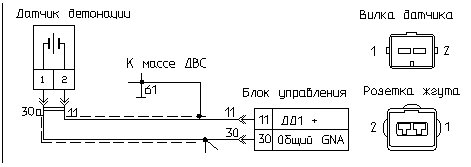

главная → коды ГАЗ
Код 041—неисправность цепи (первого) датчика детонации (ДД)
- Причина 1: обрыв сигнального провода датчика детонации.
- Причина 2: обрыв экранирующей оплетки провода датчика детонации.
- Причина 3: замыкание на массу проводов датчика детонации.
- Причина 4: замыкание на бортсеть проводов датчика детонации
- Причина 5: неисправность датчика детонации.
- Причина 6: неисправность блока управления двигателем.
- Способы проверки исправности цепи датчика детонации.
Обрыв сигнального провода датчика детонации

- Проверьте наличие и надежность подключения розетки жгута к вилке датчика.
- Если подключение нормальное, то отсоедините от датчика розетку жгута проводов, снимите ее резиновый чехол и осмотрите состояние контактов розетки и подведенных к ней проводов. При необходимости отрихтуйте контакты соединителя или замените их.
- Для проверки неисправности цепи жгута отсоедините датчик и блок от жгута проводов и при отключенном зажигании проверьте омметром целостность цепи «11» жгута: от контакта «2» розетки датчика до контакта «11» розетки блока. При необходимости восстановите указанную цепь.
- После устранения неисправности включите зажигание и проконтролируйте отсутствие кода неисправности «041».
Обрыв экранирующей оплетки провода датчика детонации
- Проверьте наличие и надежность подключения розетки жгута к вилке датчика.
- Если подключение нормальное, то отсоедините от датчика розетку жгута проводов, снимите ее резиновый чехол и осмотрите состояние контактов розетки и подведенных к ней проводов. При необходимости отрихтуйте контакты соединителя или замените их.
- Для проверки неисправности цепи жгута отсоедините датчик и блок от жгута проводов и при отключенном зажигании проверьте омметром целостность экранирующей оплетки провода «11» жгута: от контакта «1» розетки датчика до контакта «30» розетки блока. При необходимости восстановите указанную цепь.
- После устранения неисправности включите зажигание и проконтролируйте отсутствие кода неисправности «041».
Замыкание на массу проводов датчика детонации
- Для проверки неисправности цепей отсоедините датчик и блок от жгута проводов.
- При отключенном зажигании проверьте омметром соединение цепей «11» и «30а» жгута с массой двигателя: соответственно от контактов «1» и «2» розетки датчика до металлических деталей двигателя.
- При необходимости устраните неисправность указанной цепи.
- После устранения неисправности включите зажигание и проконтролируйте отсутствие кода неисправности «041».
Замыкание на бортсеть проводов датчика детонации
- Отсоедините защитный чехол розетки датчика детонации.
- Включите зажигание и проверьте вольтметром напряжение между контактами розетки датчика «1», «2» и металлической массой двигателя.
- Если напряжение около «12 В», то отсоедините датчик и блок управления от жгута проводов.
- Отключите аккумулятор от бортсети и проверьте омметром вероятность замыкания цепей «11» и «30а» жгута с электропитанием системы управления: соответственно от контактов «1» и «2» розетки датчика к контактам «18», «27» и «37» розетки блока.
- После устранения неисправности включите зажигание и проконтролируйте отсутствие кода неисправности «041».
Неисправность датчика детонации
- При работающем на холостом ходу двигателе постучите твердым неметаллическим предметом по датчику и проверьте вольтметром переменного тока наличие сигнала от датчика детонации: если амплитуда сигнала < 0,1 В, то датчик неисправен.
- Замените неисправный датчик детонации на исправный.
- После замены датчика включите зажигание, запустите двигатель, установите обороты холостого хода 3300..3500 об/мин и проконтролируйте отсутствие кода неисправности «041».
Неисправность блока управления двигателем

- Отсоедините блок управления от жгута проводов и внимательно осмотрите целостность контактов розетки жгута и вилки блока.
При необходимости отрихтуйте контакты соединителя или замените их. При обнаружении воды в соединителе блок необходимо снять, остатки
воды удалить, просушить блок при температуре не выше 85°C.
- Подключите к системе контрольный блок управления.
- После замены тестируемого блока на контрольный включите зажигание, запустите двигатель и проконтролируйте отсутствие кода неисправности «041».
- Если код «041» не регистрируется на контрольном блоке, то замените тестируемый блок на исправный.
Способы проверки исправности цепи датчика детонации
- Включите зажигание и запустите двигатель. Установите обороты холостого хода двигателя 3300..3500 об/мин на время более 20 сек. Если фиксируется код неисправности «041»: неисправен жгут проводов, блок управления или датчик детонации.
- При работающем на холостом ходу двигателе, постучите твердым неметаллическим предметом по датчику и проверьте вольтметром переменного тока наличие сигнала от датчика детонации: если амплитуда сигнала < 0,1 В, то датчик неисправен.
- Если датчик детонации исправен, проверьте целостность цепей: «11» и «30а», а также надежность соединения экранирующей оплетки проводов датчика с металлической массой двигателя.
- Если жгут проводов исправен, то проверьте отсутствие кода «041» на повышенных оборотах холостого хода >3000 об/м с контрольным блоком управления.
|